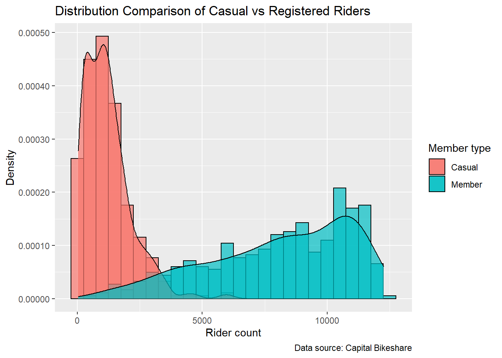
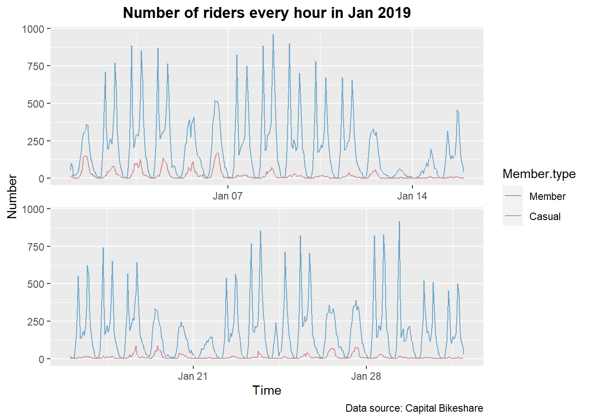
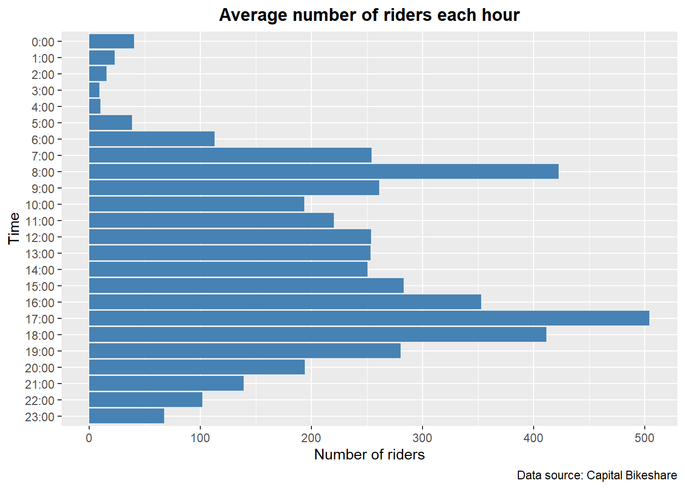
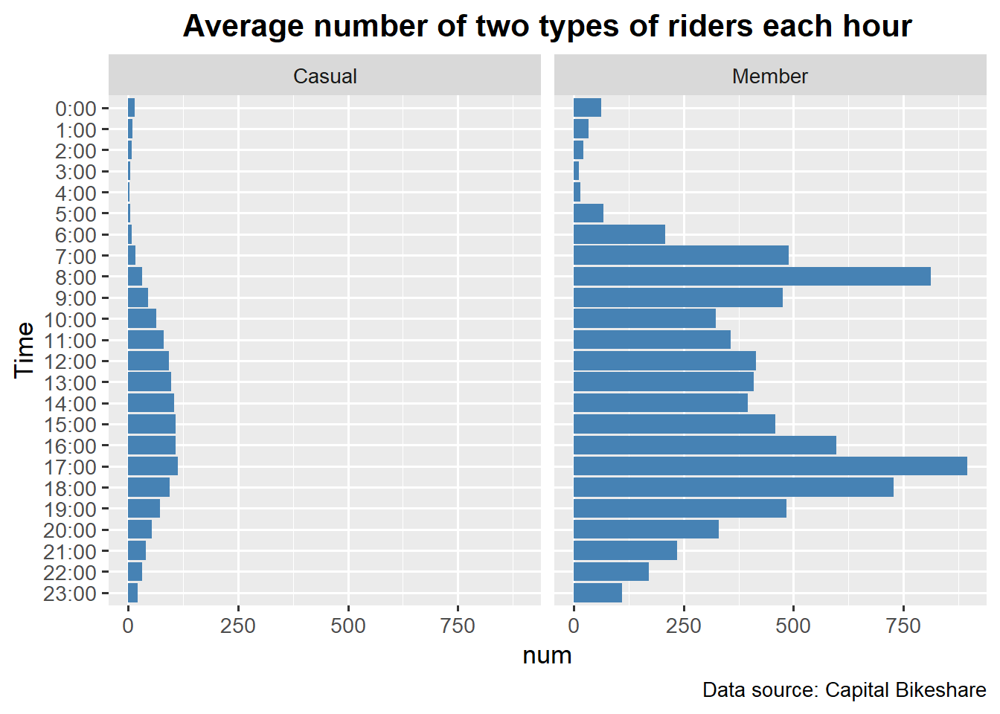
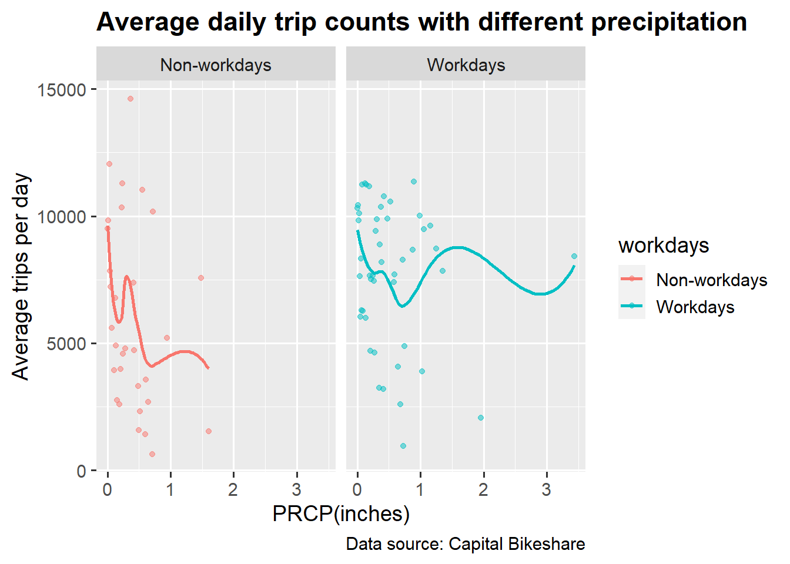
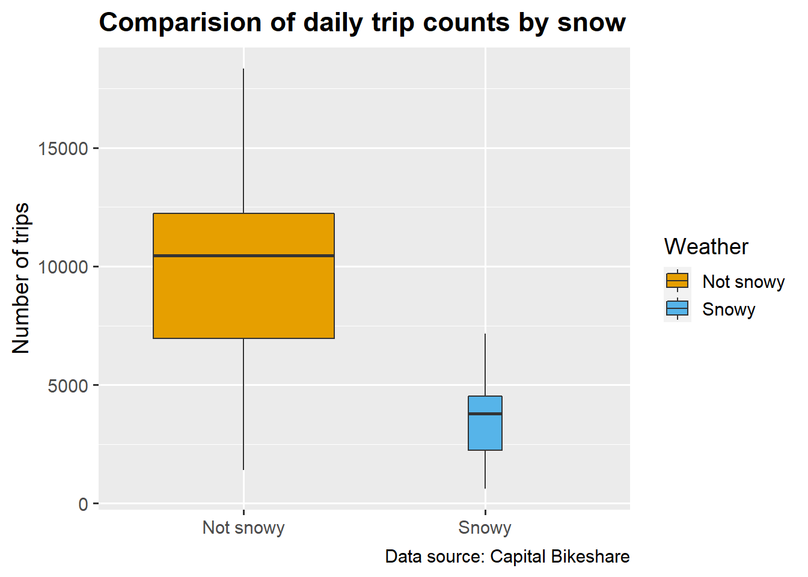
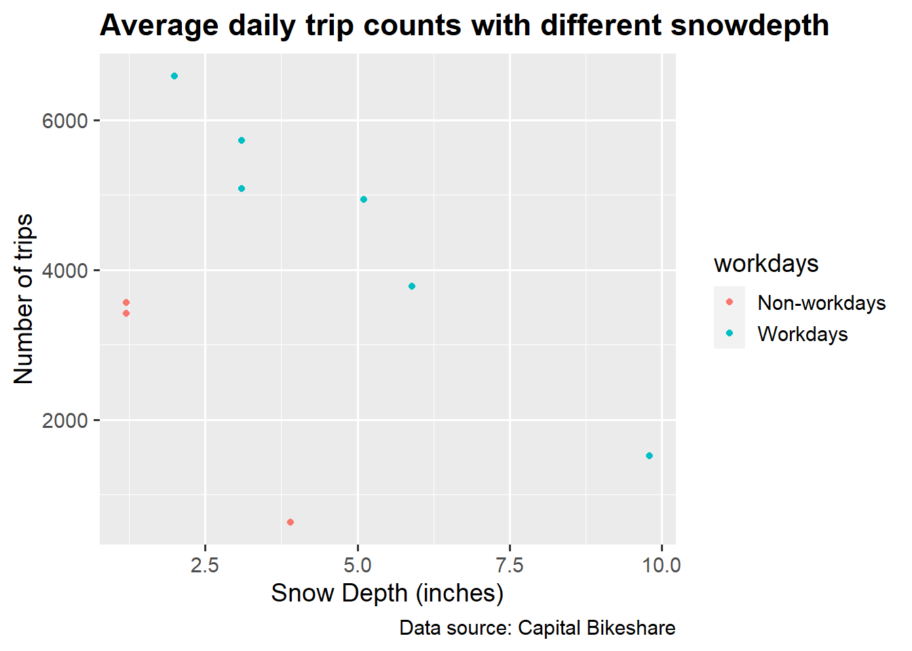

Chapter 5 Results
5.1 Part 1
The granularity of the main data is at the hourly level. However, for some of the analysis we will also want to compute daily statistics. In particular, in this part we will be analyzing the daily number of registered and unregistered users.
5.1.1 Distributions of the daily counts of casual and member riders
Let’s begin by comparing the distribution of the daily counts of casual and member riders. The following plot overlays the distribution of the daily counts of casual and member user with the granularity of the records being daily counts.

The distribution for the casual riders is right skewed with the mode at around 1,500, a tail extending to over 5,000 (no counts more than 7,500); the one with the member ones is left skewed with the mode at around 11,000. The spread of the casual distribution is more concentrated on the range from 0 to 4,000 than that of the member one, which has a spread of much wider span from 0 to 15,000. Both distribution do not have significant outliers.
5.1.2 Relationship between the daily counts of casual and member riders
The density plots do not show us how the daily counts for casual and member riders vary together. The following scatter plot helps us to investigate the relationship between casual and member counts. We will also draw a linear linear regression line for both groups. The points in the scatter plot are colored according to whether or not the day is working day. Since there are many points in the scatter plot, we make them small to help with solving the overplotting issue.
The scatter plot roughly exhibits a linear relationship between casual and registered riders on the weekend. Moreover, it makes clear the separation between the work days and non-work days. However, the overplotting makes it difficult to see the density of the joint counts. To address this issue, let’s try visualizing the data with another technique, the kernel density plot.
The kernel density plot suggests that for work days there are significantly more member riders than casual ones but for nonwork days the difference is not as large. It’s obviously easier to see the relationship on this plot since the density centers look more clear and therefore the overplotting issue is addressed.
5.2 Part 2
5.2.1 Number of riders every hour in Jan 2019

If we look at the graph of the number of riders every hour in Jan 2019, we notice that there is a repeating pattern that the number of riders keep fluctuating every day. Let’s take a closer look at the pattern of number of bike riding every day. We want to investigate the average number of bike riding each hour in 2019.
5.2.2 Daily pattern of bike riding

According to the graph above, it can be observed that the number of riders peaks during rush hours each day. Moreover, the number of riders gradually decreases and achieves its lowest point at 3:00 AM.
5.2.3 Difference between patterns of riders

When comparing the number of casual and member riders, we notice that the former is much lower than the latter. More importantly, there are different patterns of bike riding for these two types of riders. For members, as in the last graph, the number of riders increases rapidly during rush hours. It can be inferred that many member riders use bike sharing for daily commute. On the other hand, for casual riders, most bike sharing happen during the daytime and there is no rapid increase in rush hours.
5.3 Part 3
In this part of analysis, let’s find out how the weather condition influences the riding behaviors. The data granularity is at the daily level.
5.3.1 Average number of trips per day in different temperatures
Firstly, we want to visualize the average number of trips per day in different temperatures.
The graph below clearly shows that the number of trips ramps up quickly from 0 to 60 degrees, but the relationship between bike rental and temperature becomes weaker in temperatures above 60 degrees. The mode is at around 55 degree, meaning that there is a distinctly high number of bike rentals in that temperature. After some further investigation, we found out that a potential explanation for the unusual spike is that the National cherry blossom festival in DC was at the day for the mode temperature.
5.3.2 Average daily trips counts with different precipitation
Next, let’s visualize the relationship between rainy days and the number of trips.

It’s counter-intuitive to see that the number of trips is not necessarily less in the rainy days. In fact, we can see a few outliers at the days with extremely heavy rains have a pretty high number of trips. Also, it’s interesting to see that the number of trips on workdays are less affected by rains than on weekends. A reasonable guess is that on weekdays people cannot avoid renting bikes for commuting no matter if it is rainy or not.
5.3.3 Average daily trips counts by snow
Then, we looked into the impact of snow on the number of trips.


The impact of snow is very obvious as the average number of trips drops drastically on snowy days. Additionally, though the data points for the snowy days are scarce, we can roughly observe that with the increasing severeness of snow, the number of trips decreases proportionally. And during work days the snow depth has a smaller effect on the number of trips than during non-work days.